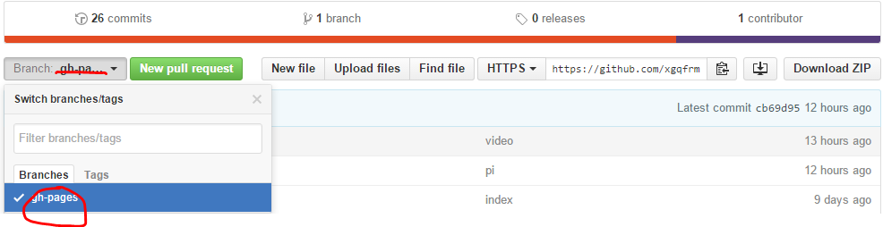

Second Blog:
Published Date: 2016-01-02
How to build a personal blogs by using GitHub Pages!
How To Do: step by step:
step 00: step 01: step 02: step 03: step 04: step 05: step 06: step 07: step 08: step 09: step 10: step 11: step 12: step 13: step 14: step 15: step 16:
新建一个仓库:gh-pages


点击:Settings

自动生成page：Launch automatic page generator

确认布局样式：Continue to layouts

发布page：Publish page

查看：Your site is Pulished at: URL

修改：Default branch === gh-pages

确认update：

点击：branches
删除：master branch

添加：readme.md

编辑如下：page URL +[ Logo 可选]

提交commit：Commit new file

修改描述URL: website URL

查看 :readme.md

点击 page URL 测试：Projects display Pages

若，效果如图所示：Congratulations！